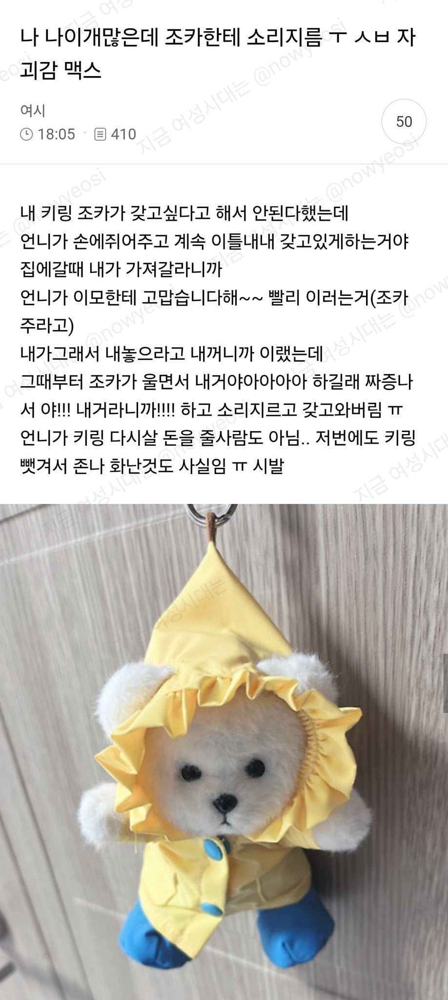
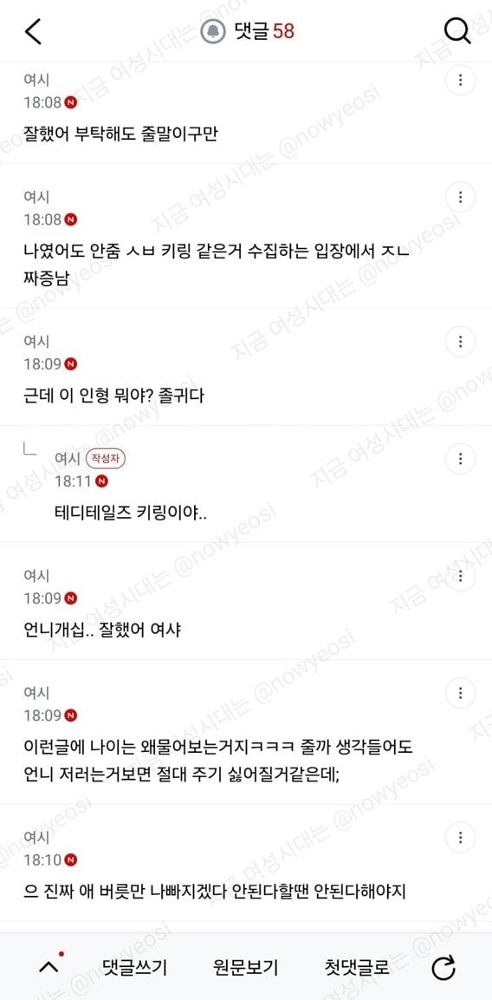
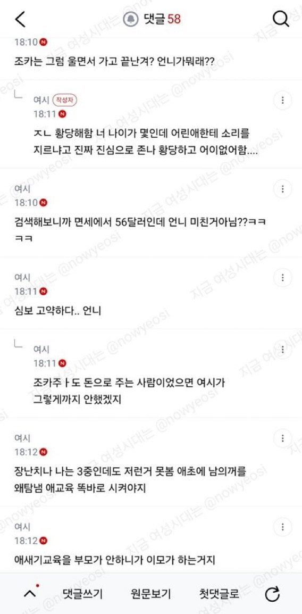

잘했다는 댓글 다수
언니가 잘못했네



잘했다는 댓글 다수
언니가 잘못했네
명절간 갈등을 바이럴 소스로 하지는 말자
아무리 그래도 요즘은 가격알려주고 사주겠냐고 하면 그 손 놓게하는 세상인데
다 떠나서 애들한테 내꺼와 남에꺼 교육 잘 시켜야함
작성자 9월15일 가입해서 벌써 7랩이네부럽다 어캐한거임
열심히해야지.. 근데 렙 오르면 좋은점 잇음?
30렙 이상부턴 승희가 월급 줌
렙 오르면 사람들이 ㅂㅅ취급해줌
바이럴
다른거보다 준단말도 안했는데 “이모한테 고맙습니다해~~” 이게 제일 ㅈ같음
인형뽑기 기계에 있을 거 같이 생겼는데 와 이리 비쌈;;
니돈으로 사서줘라
어릴때부터 니가 형이니깐 그냥 줘라 이런식으로
하나씩 뺏기는거 존나 화났었는데
부모가 애를 그렇게만든거지
좌절하는법 포기하는법도 가르쳐야함
지랄, 조카 생기면 다 주고 싶어짐.